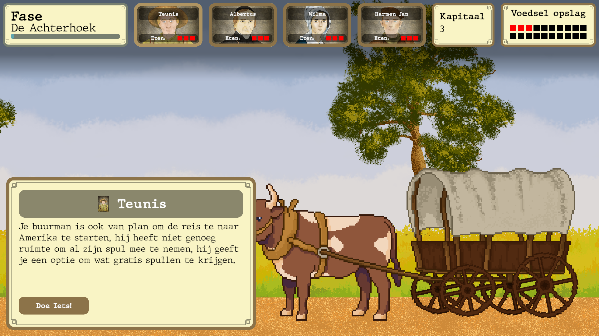

Digitized Dutch card game
"De ramp met de Phoenix" is a digitization of an existing Dutch card game with the same name. It was developed by a group of 5 people. This project was commissioned by a high school in Winterswijk. We were given the task to turni the card game into a digital game; it didn't have to be a card game, we were given complete freedom as long as the story remained the same. Th story is based on a true story about a ship called the SS Phoenix. We turned the game into a survival game inspired by the Oregon trail.

During the development De Ramp met de Phoenix, I worked as the SCRUM master and I worked on the following features: